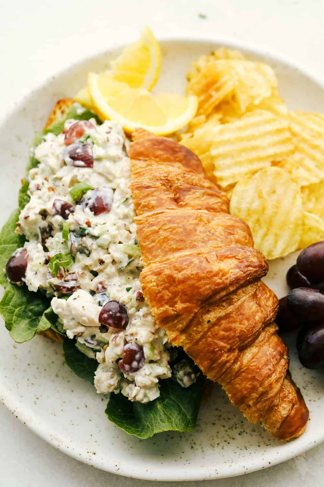

Description:
This elegant salad combines tender, juicy chicken breast with a creamy dressing made from
a mix of mayonnaise and Greek yogurt. Fresh ingredients like crisp celery, red onion, and
a touch of Dijon mustard are added for crunch and zest. Toasted almonds lend a delightful
nutty flavor, while dried cranberries introduce a hint of sweetness. Fresh herbs like parsley
enhance the taste, and a splash of lemon juice brightens the overall flavor. The result is a flavorful, refined dish
that's perfect as a light lunch or an appetizer.
Ingredients:
- 2 cups cooked chicken breast, diced
- 1/2 cup mayonnaise
- 1/4 cup Greek yogurt
- 1 tablespoon Dijon mustard
- 1 tablespoon lemon juice
- 1/4 cup celery, finely chopped
- 1/4 cup red onion, finely chopped
- 1/4 cup toasted almonds, chopped
- 1/4 cup dried cranberries
- 2 tablespoons fresh parsley, chopped
- Salt and pepper to taste
Steps:
- Prepare the Chicken: Cook and dice chicken breast into bite-sized pieces. Let
cool.
- Mix Dressing: In a large bowl, whisk together mayonnaise, Greek yogurt, Dijon
mustard, and lemon juice until smooth.
- Combine Ingredients: Add diced chicken, celery, red onion, toasted almonds,
dried cranberries, and fresh parsley to the bowl. Gently toss to coat everything with
the dressing.
- Season: Add salt and pepper to taste. Mix well.
- Chill: Cover and refrigerate for at least 30 minutes to allow the flavors to meld.
- Serve: Serve chilled on a bed of lettuce, in sandwiches, or with crackers.
Enjoy your refined and flavorful chicken salad!